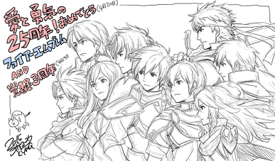
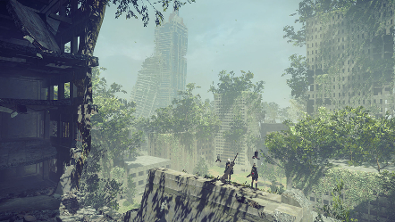
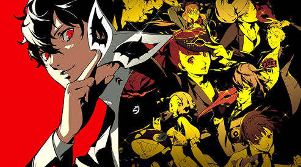

Fire Emblem
Fe15 > Fe7 > Fe4 > Fe 14 > Fe8 > Fe16 > Fe5 > Fe9 = Fe10 > Fe6 >
Fe11 > Fe12 > Feh
Fire Emblem is a series of tactical role-playing video games
developed by Intelligent Systems and published by Nintendo. Its
first game released in Japan in 1990, and is credited with both
originating and popularizing its genre. Counting original mainline
games, remakes and spin-off titles, fifteen titles have been
released as of 2016. Since the release of the seventh game in the
series, Nintendo has localized all but one Fire Emblem title, Fire
Emblem: New Mystery of the Emblem, for the West. Traditionally a
hardcore series, incorporating permanent character death for units
who fall in battle, the series has trended towards opening up to
casual gamers with an optional casual mode, beginning with Fire
Emblem: New Mystery of the Emblem in 2010.
En serie som antingen träffar eller missar. Har börjat hatat
serien, eftersom nintendo fokuserar på sido-konversationer
istället på faktiskt bättre combat. Serien i helhet får 6/10.

Nier Automata
Nier: Automata is a 2017 action role-playing video game developed by
PlatinumGames and published by Square Enix. It is a sequel to the
2010 video game Nier, itself a spin-off and sequel of the Drakengard
series. The game originally released for the PlayStation 4 and
Windows via Steam, with an Xbox One port being published the
following year under the title, NieR:Automata: Become As Gods
Edition. Set during a proxy war between alien-created machines and
human-crafted androids, the story follows the trials of a combat
android, her companion, and a fugitive prototype. The story requires
multiple playthroughs, each unlocking additional story elements.
Gameplay combines role-playing elements with action-based hack and
slash combat, and features switches between video game genres
similar to that of Nier with elements ranging from shoot 'em up to
text adventure.
Dålig combat, men har riktig intressanta teman, karaktär och
story. Existentiell och frågar bra många frågor om meninget med
livet. 9/10, väntar på Nier Replicant.

Persona
P3 > P5 >P4
Persona, sometimes known as Shin Megami Tensei: Persona outside of Japan, is a video game franchise developed and primarily published by Atlus. Focusing around a series of role-playing video games, Persona is a spin-off from Atlus' Megami Tensei franchise. The first entry in the series, Revelations: Persona, was released in 1996 for the PlayStation. The series has seen several more games since, with the most recent main entry being 2016's Persona 5.
Har en bias mot 3:an eftersom det var mitt första Persona spel.
Serien överlag har riktig bra story och musik. Gillar inte all
leveling som behövs i 3an, 4an. 8/10.
